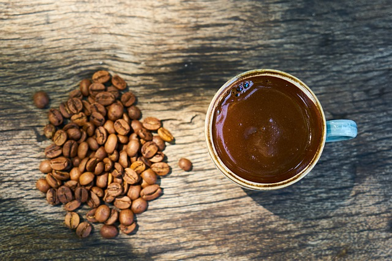
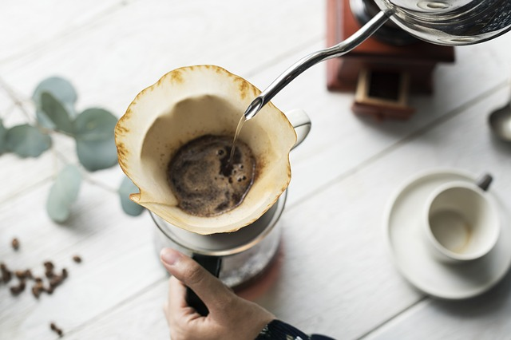

Türk Kahvesi
Türk kültüründe önemli yere sahip Osmanlı İmparatorluğu'dan günümüze kadar gelmiş en eski kahve hazırlama ve pişirme metotlarındandır.Telvesi ile ikram edilen tek kahve türüdür.
Filtre Kahve
Öğütülmüş kahve çekirdeklerinin bir filtreden süzülen su yardımıyla demlenmesi sonucu elde edilen kahvedir.Suyun filtreden geçerek kahveyle buluşması ve damla damla hazneye dökülmesi nedeniyle bu yöntemle hazırlanan kahveye 'filtre kahve' ya da 'damla kahve' denilmektedir
Americano
Espresso üzerine sıcak su eklenmesiyle elde edilir.Americano yaparken öncelikle espresso yapımına geçilir. Espresso için taze öğütülmüş kahve portafilter içine alınır (single shot için 7-9 gr,double shot için 14-18 gr önerilir).